BEE 탤런트쇼: 픽토그램 스킷 v7 (정솔 자매 피드백 반영)
10월 24일(토) · 26클릭 · 배우 3명(예수님 가운데) + 스태프 1명
- '찰칵' 소리마다 3명이 정지. 클릭 사이에는 스태프만 움직여 '기적'을 보여 줌.
- 빨간 글씨 = v5에서 바뀐 점. 스크린 위치를 생각해서 동선과 위치를 현장에서 정하기.
- 그림은 정솔 자매의 손그림 메모와 실제 소품 사진을 참고해 다시 그림.
소품·의상
| 소품 | 장면 | 준비 |
|---|
| 투명한 물병(유리/플라스틱) 1개 + 잔 1개 | 1 | |
| 보라색 색소 | 1 | ✅ 손장협 구매 완료 |
| 예수님 띠 (대각선 천) — 13번은 3개 | 전체 | |
| 신하 모자 · 해골/웃는 얼굴 양면 판 | 2 | ✅ 판 완성 |
| 유령 그림 (스태프가 병자 위로 듦) | 3 | ✅ 완성 |
| 베개 (또는 흰 천) — 책상 없이 서서 누운 연기 | 3 | |
| '베데스다' 물결 판 | 3 | ✅ 완성 |
| 오병이어 쟁반 · 바구니(없으면 쟁반) | 4 | ✅ 쟁반 완성 |
| 물결 판 (파랑) | 5, 16 | ✅ 완성 |
| 골판지 배 | 5 | |
| 양면 안대 (X X / 반짝이는 눈) | 6 | ✅ 완성 |
| 흰 천 | 7, 12 | ✅ 완성 |
| 뻥튀기 (옷 속에) | 8 | |
| 빛 효과판 (노란 전지) | 9 | ✅ 완성 |
| '양의 문' 판 (주황 테두리, 오려서 여는 문) | 10 | ✅ 완성 |
| 찜질방 양머리 수건 2개 | 11, 16 | |
| 휴지 | 12 | |
| '길'·'진리'·'생명' 종이 | 13 | ✅ 완성 |
| 선글라스 3개 (손장협 1개 지참, 2개 더 필요) | 13 | 손장협 1개 |
| 포도 그림 2개 | 14 | ✅ 완성 |
| 큰 물고기 | 16 | ✅ 완성 |
| 베드로 수건 머리띠 | 16 | |
| 테이프 (덕트 테이프 · 마스킹 테이프) | 소품 고정 | 손장협 지참 |
전체 흐름
클릭 순서
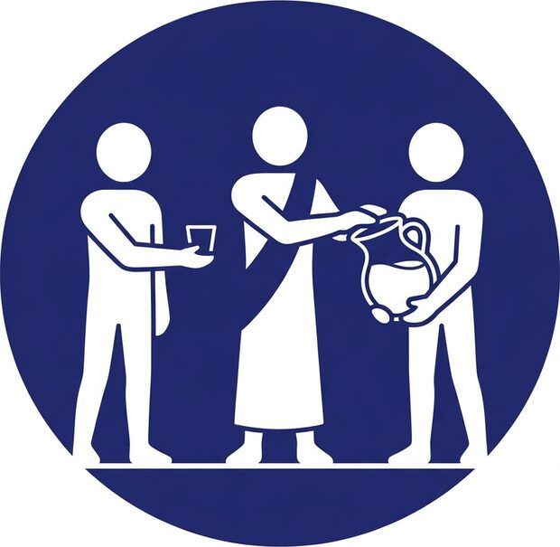
1. 물이 포도주로 (1)
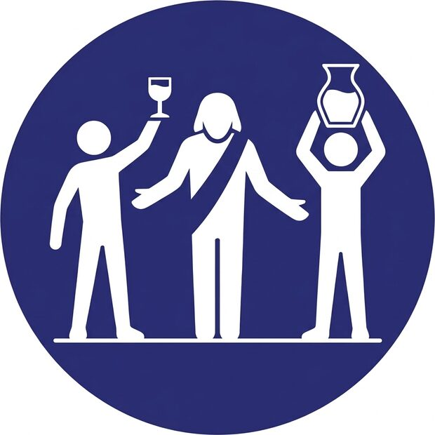
2. 물이 포도주로 (2)
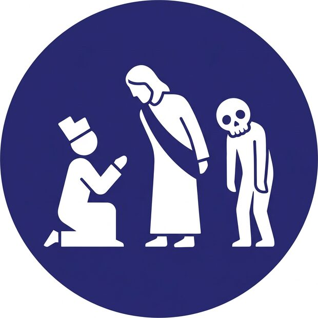
3. 왕의 신하의 아들 (1)
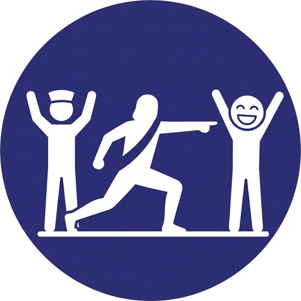
4. 왕의 신하의 아들 (2)
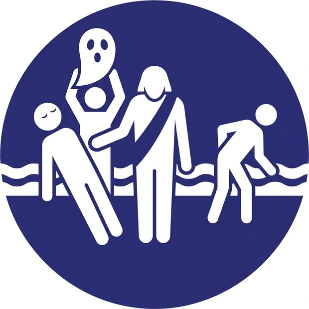
5. 베데스다 연못 (1)
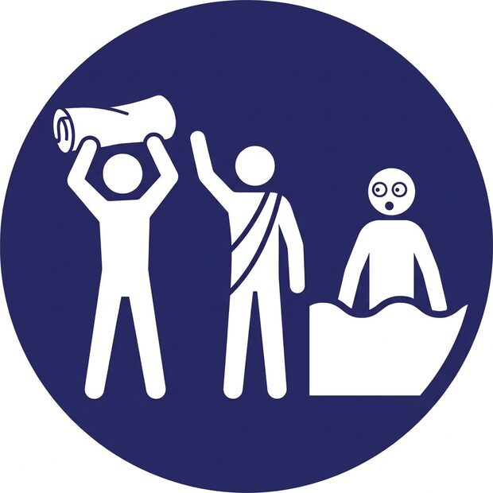
6. 베데스다 연못 (2)
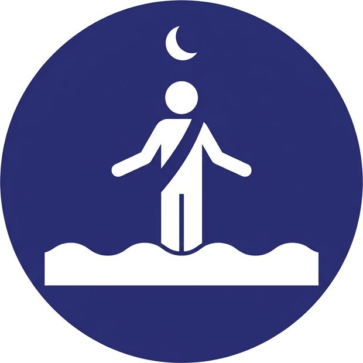
9. 물 위를 걸으심 (1)
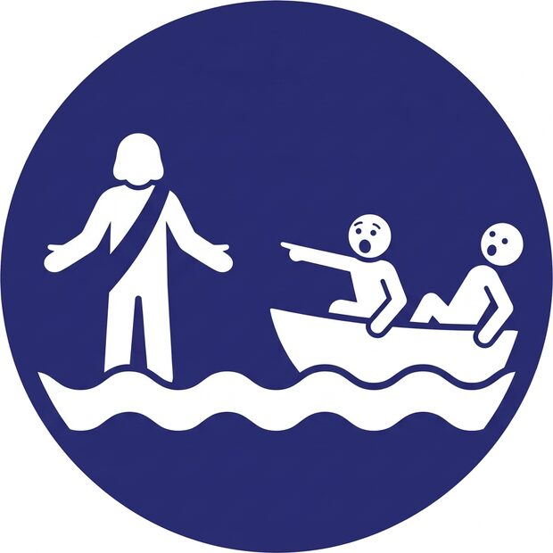
10. 물 위를 걸으심 (2)
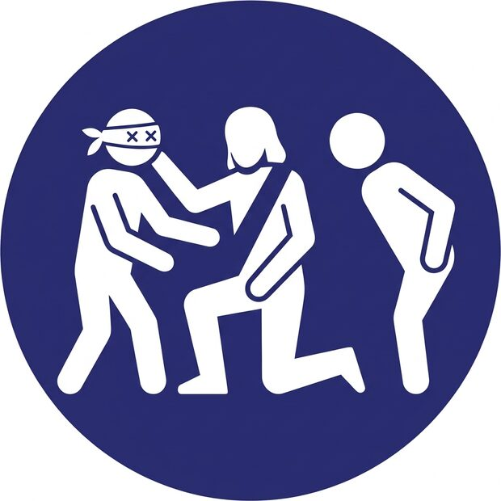
11. 날 때부터 맹인 된 자 (1)
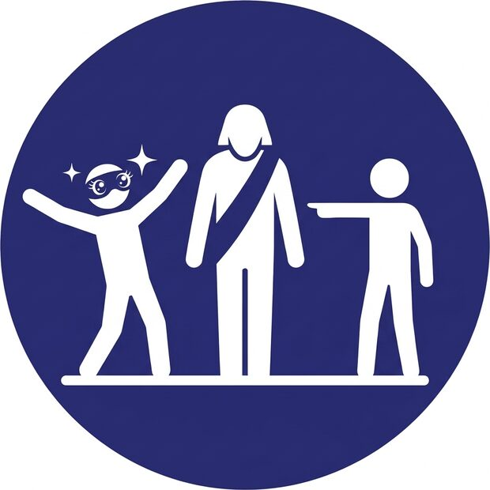
12. 날 때부터 맹인 된 자 (2)
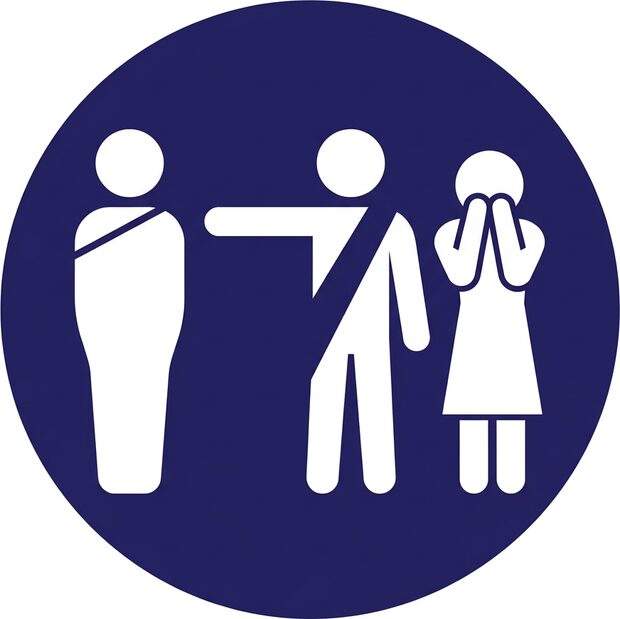
13. 나사로를 살리심 (1)
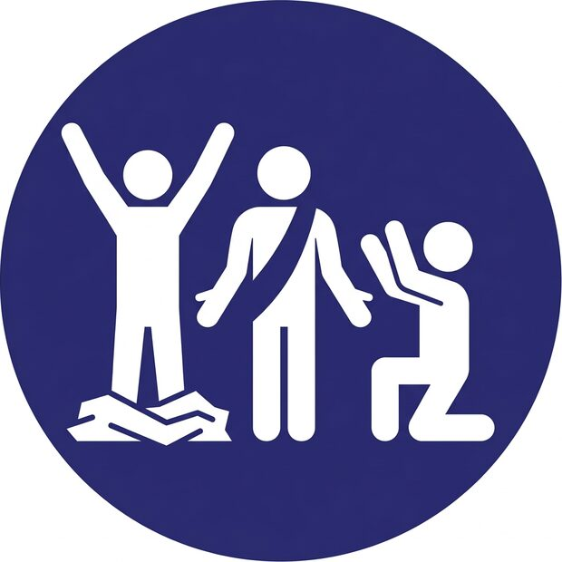
14. 나사로를 살리심 (2)
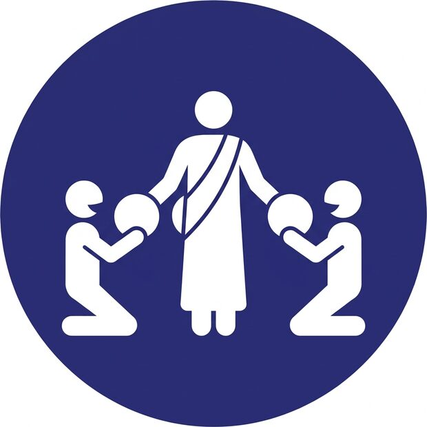
15. 나는 생명의 떡이다
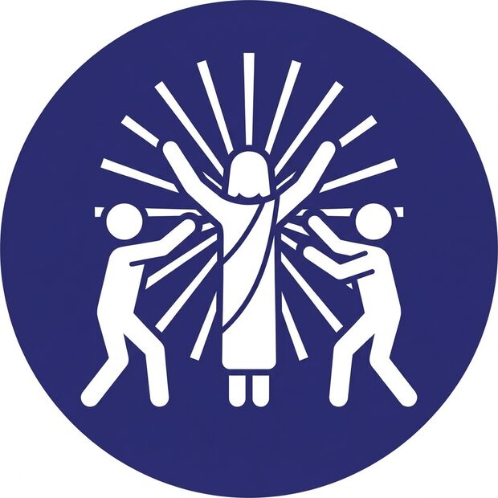
16. 나는 세상의 빛이다
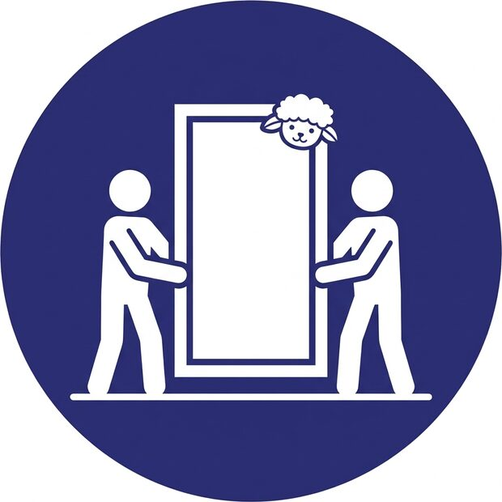
17. 나는 양의 문이다 (1)
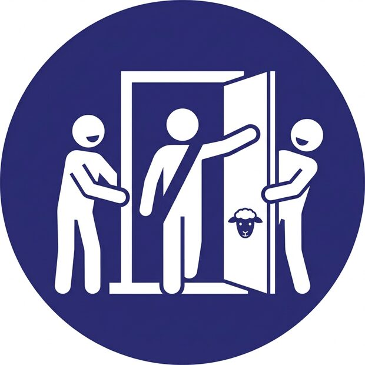
18. 나는 양의 문이다 (2)
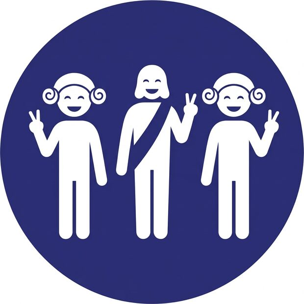
19. 나는 선한 목자다
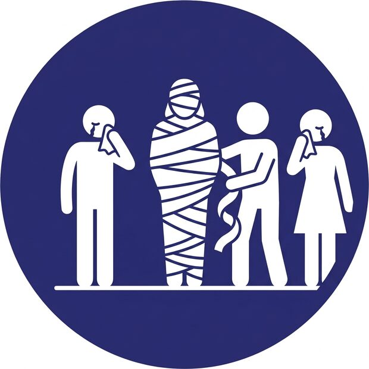
20. 나는 부활이요 생명이다 (1)
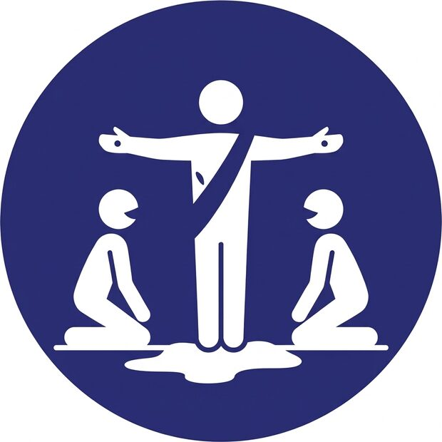
21. 나는 부활이요 생명이다 (2)
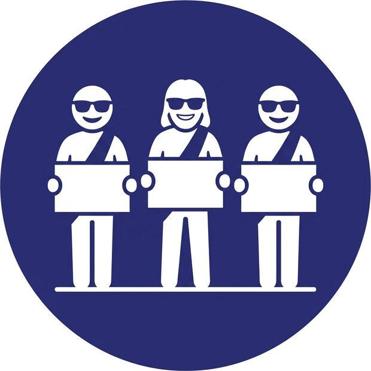
22. 나는 길이요 진리요 생명이니
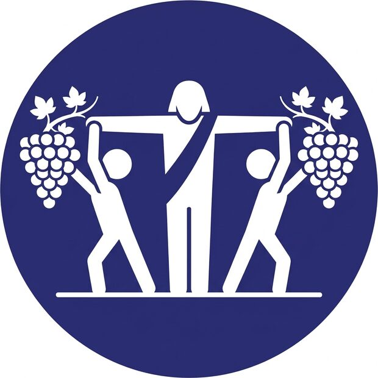
23. 나는 참포도나무다
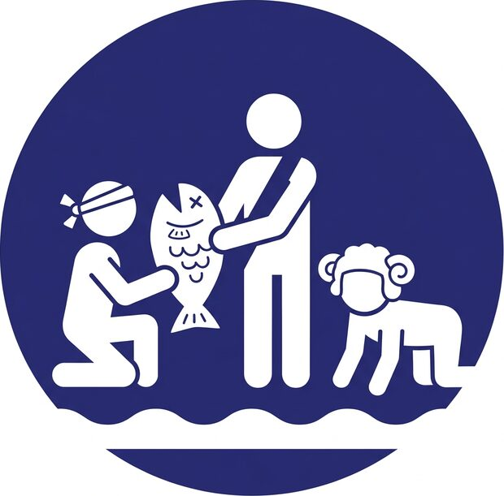
25. 내 양을 먹이라 (1)
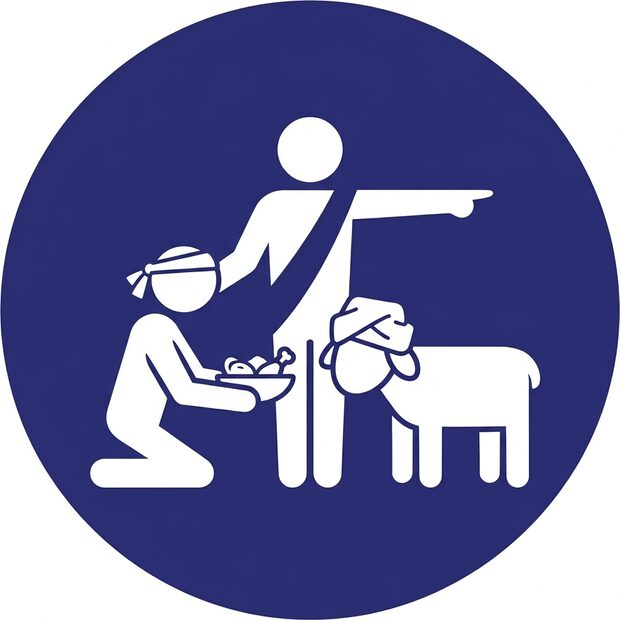
26. 내 양을 먹이라 (2)
1. 물이 포도주로
2클릭
변경: 투명한 물병 1개 + 잔 1개, 두 장면 사이에 스태프가 보라색 색소를 넣음
클릭 1
예수님: 투명한 물병(항아리) 위에 손을 얹어 축복 / 우: 물이 담긴 투명 물병을 들고 서 있음 / 좌: 빈 잔을 들고 기다림
클릭 2
▶ 스태프 (이 클릭 전): 스태프: 정지한 사이 물병과 잔에 보라색 색소를 넣음
예수님: 팔을 펼쳐 '대접하라' / 좌: 포도주가 된 잔을 높이 듦 / 우: 보라색이 된 물병을 머리 위로 높이 듦
☐ 유지☐ 수정☐ 삭제
메모 / 스케치…
2. 왕의 신하의 아들
2클릭
변경: 아들: 해골 마스크, 서 있는 버전 (바닥 사용 X)
클릭 3
예수님: 몸을 숙여 들음 / 좌(신하, 관리 모자): 무릎 꿇고 간청 / 우(아들): 해골 가면을 얼굴에 대고 비틀거리며 서 있음
클릭 4
예수님: 런지 자세로 멀리 가리킴 '가라, 네 아들이 살았다' / 우: 가면을 뒤집어 웃는 얼굴(살아남) + 두 팔 들고 환호 / 좌: 두 손 들고 찬양
☐ 유지☐ 수정☐ 삭제
메모 / 스케치…
3. 베데스다 연못
2클릭
변경: 서서 누운 연기 + 유령 그림, '베데스다' 물결 판
클릭 5
▶ 스태프 (이 클릭 전): 스태프: 병자 위로 유령 그림을 들고 있음
좌: 서 있지만 누워 있는 것처럼 연기 (뒤로 기댄 자세, 눈 감음) / 예수님: 손을 내밂 / 우: 물결 뒤에서 연못을 향해 몸을 숙임
클릭 6
▶ 스태프 (이 클릭 전): 스태프: 유령 그림을 치움
좌: 일어나 베개(또는 흰 천)를 머리 위로 듦 / 예수님: 한 팔을 듦 / 우: 물결 뒤에서 깜짝 놀람
☐ 유지☐ 수정☐ 삭제
메모 / 스케치…
4. 오병이어
2클릭
변경: 바구니 거꾸로 들기 · 오병이어 쟁반 소품
클릭 7
좌(소년): 까치발로 오병이어 쟁반을 드림 / 예수님: 두 손으로 받음 / 우(제자): 빈 바구니를 거꾸로 들어 보임 (바구니 없으면 쟁반)
클릭 8
▶ 스태프 (이 클릭 전): 스태프: 뒤에서 바구니에 빵과 물고기를 채움
예수님: 오병이어 쟁반을 하늘로 들어 감사 / 우: 가득 찬 바구니를 듦 / 좌: 두 손 들고 기뻐함
☐ 유지☐ 수정☐ 삭제
메모 / 스케치…
5. 물 위를 걸으심
2클릭
변경: 예수님 혼자 물 위 → 배 안의 제자들이 놀람 (베드로 빠지는 장면 삭제: 요한복음에 없음)
클릭 9
▶ 스태프 (이 클릭 전): 스태프: 물결 판을 듦
예수님 혼자: 물결 위에 서서 걸어옴 (예수님 한 분으로 대체)
클릭 10
좌: 물결 위의 예수님 / 우: 배(골판지 배) 안의 제자들이 예수님을 가리키며 깜짝 놀람 (베드로가 빠지는 장면은 요한복음에 없어 대체)
☐ 유지☐ 수정☐ 삭제
메모 / 스케치…
6. 날 때부터 맹인 된 자
2클릭
변경: 손 대신 안대 (X X → O O)
클릭 11
좌: 'X X' 쪽 안대를 쓰고 앞을 더듬음 / 예수님: 무릎 꿇고 얼굴을 만짐 / 우: 궁금해하며 봄
클릭 12
▶ 스태프 (이 클릭 전): 스태프: (또는 본인이) 안대를 뒤집어 줌
좌: 안대를 뒤집어 반짝이는 눈 쪽 + 두 팔 벌려 위를 봄 / 예수님: 일어섬 / 우: 놀라며 가리킴
☐ 유지☐ 수정☐ 삭제
메모 / 스케치…
7. 나사로를 살리심
2클릭
클릭 13
좌: 흰 천에 싸인 나사로 / 우: 얼굴을 가리고 슬퍼함 / 예수님: 팔을 뻗어 '나사로야 나오라'
클릭 14
▶ 스태프 (이 클릭 전): 스태프: 천을 풀어 벗김
좌: 천이 벗겨지고 두 팔 들고 섬 / 예수님: 두 손을 펼침 / 우: 무릎 꿇고 찬양
☐ 유지☐ 수정☐ 삭제
메모 / 스케치…
8. 나는 생명의 떡이다
1클릭
변경: 옷 속에 숨긴 뻥튀기를 꺼내 줌
클릭 15
예수님: 옷 속에 숨겨 둔 뻥튀기를 꺼내 양쪽에 줌 / 좌·우: 무릎 꿇고 두 손으로 받음
☐ 유지☐ 수정☐ 삭제
메모 / 스케치…
9. 나는 세상의 빛이다
1클릭
변경: 손전등 대신 빛 효과판 + 눈부신 액션
클릭 16
▶ 스태프 (이 클릭 전): 스태프: 예수님 뒤에서 빛 효과판(전지)을 듦
예수님: 두 팔 V자 / 뒤: 빛 효과판(노란 빛줄기 전지) / 좌·우: 눈부셔하며 눈을 가림 (눈부신 액션)
☐ 유지☐ 수정☐ 삭제
메모 / 스케치…
10. 나는 양의 문이다
2클릭
변경: 2클릭으로 나눔: 양이 그려진 문 전지 → 예수님이 찢고 나옴
클릭 17
가운데: 주황 테두리 '양의 문' 판 (닫힘) / 예수님: 문 뒤에 숨어 있음 / 좌·우: 문 양쪽을 잡고 있음
클릭 18
예수님: 오려 놓은 문을 열고 나오며 맞이함 (찢지 않음) / 좌·우: 문틀을 잡고 반가워함
☐ 유지☐ 수정☐ 삭제
메모 / 스케치…
11. 나는 선한 목자다
1클릭
변경: 가시덤불 삭제: 양머리 수건 씌워 주고 셋이 V 포즈
클릭 19
예수님: 두 사람에게 찜질방 양머리 수건을 씌워 줌 / 클릭 소리에 맞춰 셋이 브이(V) 포즈
☐ 유지☐ 수정☐ 삭제
메모 / 스케치…
12. 나는 부활이요 생명이다
2클릭
변경: 흰 천에 싸인 예수님 + 휴지로 눈물 → 살아나신 예수님 (손바닥 점·옆구리 흉터)
클릭 20
▶ 스태프 (이 클릭 전): 스태프: 예수님을 감싼 천을 풀기 시작함
가운데: 흰 천에 싸여 죽은 예수님 / 좌·우: 휴지로 눈물을 닦으며 슬퍼함
클릭 21
예수님: 천이 풀리고 살아나 두 팔을 펼침 (손바닥에 점, 옆구리 흉터) / 좌·우: 무릎 꿇고 기뻐하며 바라봄
☐ 유지☐ 수정☐ 삭제
메모 / 스케치…
13. 나는 길이요 진리요 생명이니
1클릭
변경: 예수님 x3 + 선글라스 + '길'·'진리'·'생명' 종이
클릭 22
셋 다 예수님(띠) + 선글라스 / 각자 '길' · '진리' · '생명' 종이를 들고 멋진 포즈
☐ 유지☐ 수정☐ 삭제
메모 / 스케치…
14. 나는 참포도나무다
1클릭
변경: 포도 그림 들기
클릭 23
▶ 스태프 (이 클릭 전): 스태프: 뒤에서 기울어진 좌·우를 받쳐 줌
예수님: 줄기, 두 팔을 펼침 / 좌·우: 손을 잡고 바깥으로 기울어 가지가 됨, 바깥손에 포도 그림을 듦
☐ 유지☐ 수정☐ 삭제
메모 / 스케치…
15. 십자가
1클릭
변경: 스태프: 불 끄기 (가능하면)
클릭 24
▶ 스태프 (이 클릭 전): 스태프: 불 끄기 (가능하면)
예수님: 두 팔을 수평으로, 고개 숙임 / 좌·우: 무릎 꿇고 고개 숙임 (웃음 없이 경건하게)
☐ 유지☐ 수정☐ 삭제
메모 / 스케치…
16. 내 양을 먹이라
2클릭
변경: 양: 양머리 수건, 물고기 소품
클릭 25
예수님: 베드로에게 물고기를 건넴 / 좌(베드로): 무릎 꿇고 받음 / 우: 양(양머리 수건)
클릭 26
예수님: 베드로 어깨에 손, 다른 손은 앞을 가리킴 / 좌: 두 손을 모아 먹이를 줌 / 우: 양이 베드로 손에서 받아먹음 (마지막 포즈)
☐ 유지☐ 수정☐ 삭제
메모 / 스케치…